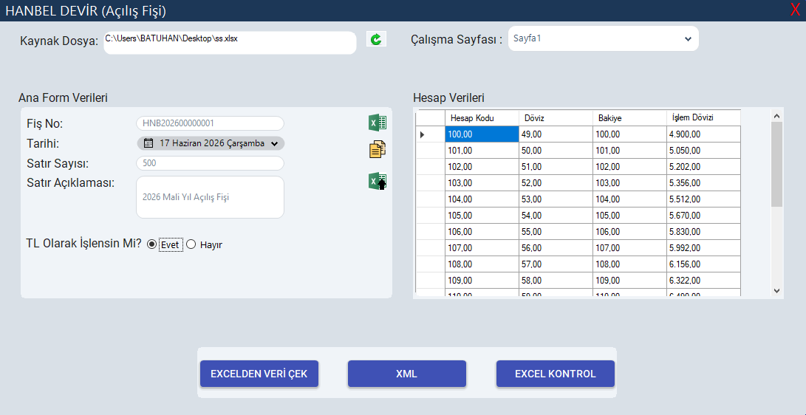

ERP Entegrasyonu
Hanbel Devir
Logo ERP Sistemleri İçin Bakiye Devir ve Otomasyon Yazılımı.

Proje Hakkında
Hanbel Devir; Logo ERP kullanıcılarının mali yıl geçişlerinde yaşadığı bakiye hatalarını ve dövizli işlemlerin açılış fişlerine yanlış aktarılması gibi veri tutarsızlıklarını çözen yüksek performanslı bir entegrasyon yazılımıdır. Logo'nun standart XML yapısını kullanarak süreçleri güvenli ve hızlı bir şekilde otomatize eder.
En büyük avantajı ise, işletmeleri ek XML çıktı lisans maliyetlerinden kurtararak doğrudan entegrasyon sağlamasıdır..
Temel Özellikler
- Korumalı veri aktarımı
- Otomatik XML şema doğrulama ve veri eşleştirme
- Gelişmiş loglama ve hata raporlama altyapısı
- Kullanıcı dostu dinamik WinForms arayüzü
Ekran Görüntüleri
